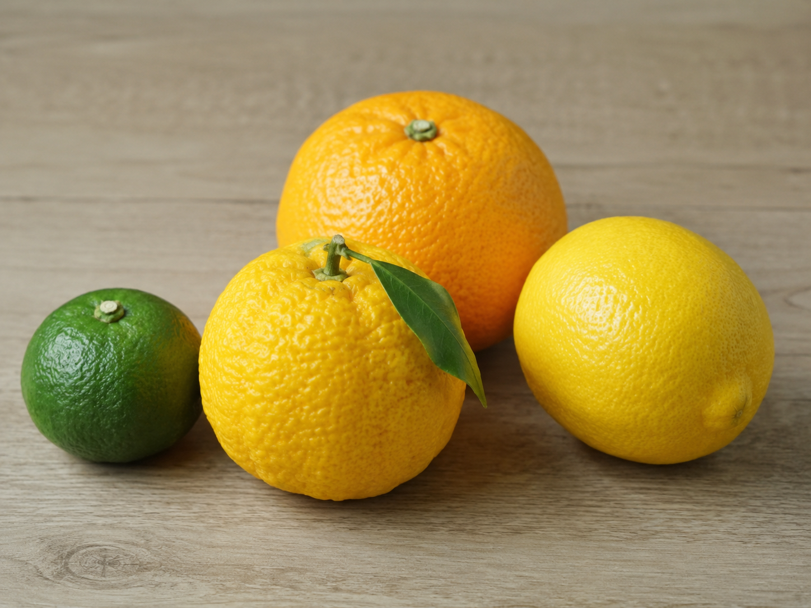
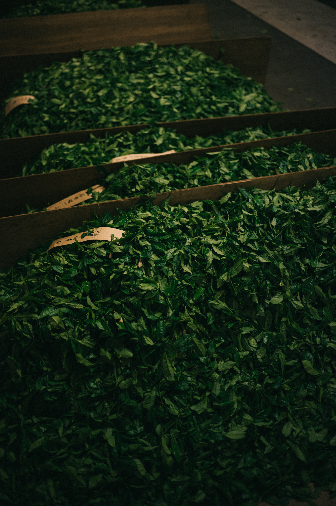

世界への挑戦

曲風園が世界へと挑戦する新しいカルチャーの形。それが、香料や添加物を一切使わず、四国4県の豊かな自然が育んだ本物の柑橘の皮だけを大胆に合わせた「ナチュラルフレーバー和紅茶」シリーズです。緑茶用の高級品種「やぶきた」から作られたどこか優しくほのかに甘い和紅茶をベースに、職人の手仕事によって完璧な調和を導き出しました。
4種のフレーバー

すだち（徳島産）——徳島の名産であるすだちの皮を贅沢にブレンド。ほんのり漂う瑞々しく鮮烈な青いシトラスの香りと優しい味わいが広がる、全国どこにもない商品。
ゆず（高知産）——土佐の豊かな太陽が育んだゆずの皮を合わせ、凍える季節に心まで温める華やかでどこかノスタルジックな和の香りを演出。
レモン（香川産）——瀬戸内の柔らかな潮風を浴びたレモンの皮がもたらす、すっきりと爽やかでエッジの効いたクリアなフレーバー。
いよかん（愛媛産）——愛媛の柑橘王国が誇るいよかんの皮を編み込み、肉厚な果実を思わせるジューシーでふくよかな甘みと上品な余韻。
最高峰の目利きが閉じ込めた、エシカルな贅沢

ソムリエのように産地や品種、味を見極めるスキルとして最高峰の国家段位「茶審査技術 九段位」および「日本茶インストラクター」を持つ生産者の確かな目利きで制作された茶葉を、農家さんたちの情熱を100%無香料のままボトルへと閉じ込めた、エシカルで贅沢なお茶をお愉しみください。